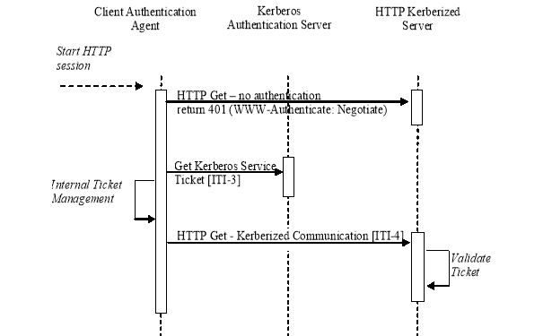

IHE IT Infrastructure (ITI)
Technical Framework
Revision 16.0 – Final Text
This section corresponds to transaction [ITI-4] of the IHE IT Infrastructure Technical Framework. Transaction [ITI-4] is used by the Client Authentication Agent and Kerberized Server Actors.
This section specifies the details of the association of a Kerberos user identity with a session for a session oriented protocol, or a transaction for a transaction oriented protocol.
Actor: Client Authentication Agent
Role: Provides appropriate ticket as part of the connection or session management for another protocol.
Actor: Kerberized Server
Role: Accepts and verifies the ticket to perform user-identity-related services as part of the connection or session management for another protocol.
RFC1510 The Kerberos Network Authentication Service (V5)
Figure 3.4-1: Kerberized Communications
The sequence diagram above describes information flow that can be encapsulated in a variety of different protocol startup sequences. The specific details for this encapsulation are defined as part of the definition of Kerberizing a specific kind of communication protocol.
This occurs at the beginning of a session or as part of each session-less transaction.
The Client Authentication Agent requests service from a Kerberized Server by sending the server a Kerberos Application Request (KRB_AP_REQ). This message contains an authenticator encrypted with the session key, the ticket obtained in the Get Service Ticket Transaction, and a flag indicating whether the client wants mutual authentication. (The setting of this flag is either specified by the rules of the Kerberized communications, or is an option of the specific Kerberized protocol.)
The Kerberized Server receives KRB_AP_REQ, decrypts the ticket, and extracts the authorization data and the session key. The server uses the session key to decrypt the authenticator and then evaluates the timestamp inside. If the authenticator passes the test, the server looks for a mutual authentication flag in the client’s request for protocols that support mutual authentication. If the flag is set, the server uses the session key to encrypt the time supplied by the Client Authentication and returns the result in a Kerberos Application Reply (KRB_AP_REP).
The actual encoding and exchange of the KRB_AP_REQ and KRB_AP_REP are defined as part of the definition of the specific Kerberized protocol.
When the Client Authentication receives KRB_AP_REP, it decrypts the server’s authenticator with the session key it shares with the server and compares the time returned by the service with the time in the client’s original authenticator. If the times match, the client knows that the service is genuine, and the connection proceeds.
If no mutual authentication is requested, the other IHE actors proceed with their IHE transactions. These transactions are identified as being requested by the authenticated user. The other actors will utilize this information for other purposes, such as confirming user authorization or logging user actions into audit trails.
Kerberized HTTP shall use SPNEGO-HTTP (see ). http://www.ietf.org/internet-drafts/draft-brezak-spnego-http-04.txt
Note: At the time of publication there were no Kerberized HTTP normative standards. There are three relatively well-documented non-normative specifications. In addition, there are commercial and open source implementations of this specification for web and application servers. It was decided to use the Kerberized HTTP specification that is implemented by Microsoft Internet Explorer (MSIE) because many healthcare desktops use MSIE.
The following figure shows a typical message sequence for Kerberized HTTP.
Figure 3.4-2: Kerberized HTTP
There is also documentation on the transactions, configuration, and troubleshooting these configurations. Rather than reproduce all of that material as part of this framework, readers are strongly encouraged to explore these references.
This transaction occurs at the beginning of each HTTP transaction.
Note: When the workstation is properly configured utilizing Microsoft Internet Explorer these transactions are transparent. A prompt for username, password, and domain is an indication of an improperly configured component.
This IHE profile recognizes that the SPNEGO-HTTP method allows the client side to return Kerberos credentials or NTLM credentials. This IHE profile thus restricts the transactions to the Kerberized credentials.
The Kerberization of DICOM has been proposed and is under development. There is not a finished standard at this time.
The Kerberization of HL7 has been proposed and is under development. There is not a finished standard at this time.
The Kerberized Communications [ITI-4] transaction is not required to log an ATNA UserAuthentication event in the case of successful communications. An ATNA UserAuthentication event shall be logged when the communications fails for the purpose of authentication failure.